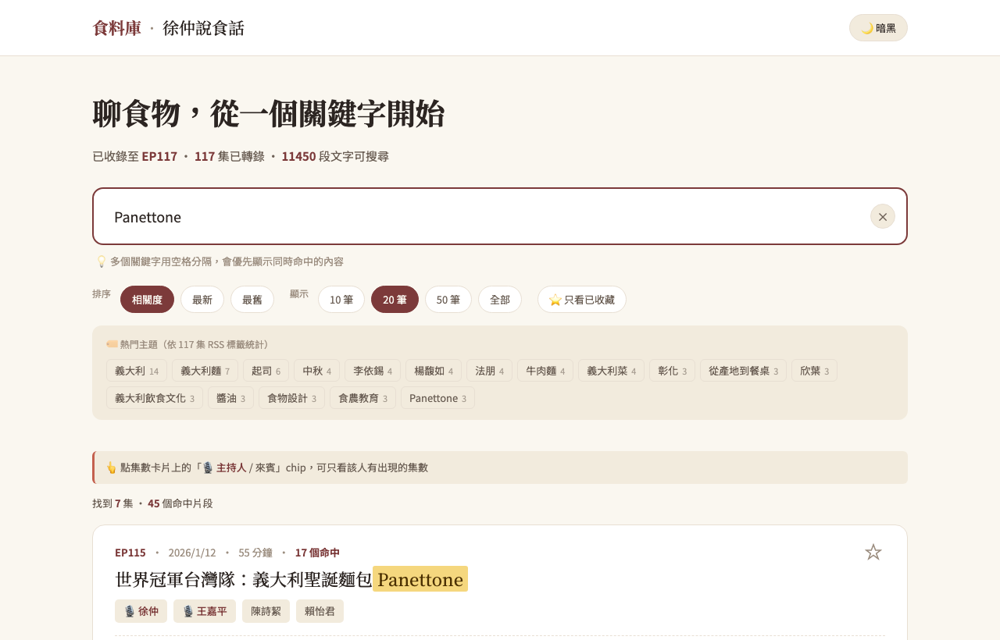
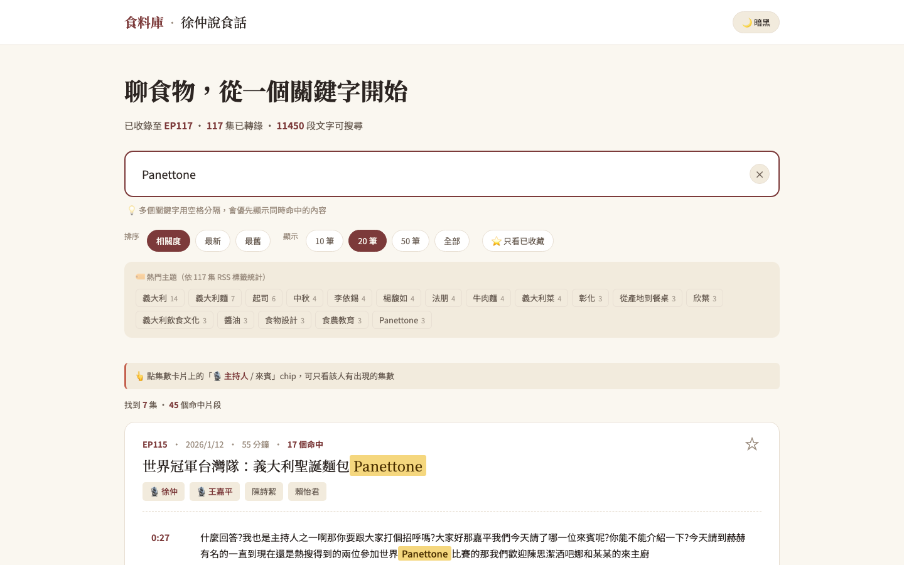
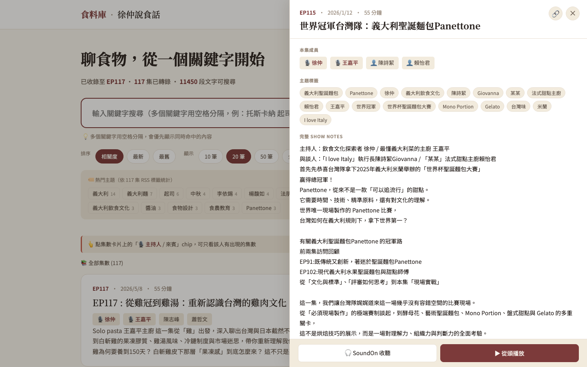

食料庫 — 徐仲說食話 podcast 全文檢索
我追《徐仲說食話》快兩年，常常在某個情境想起「他之前提過 Panettone 的那段是哪一集？」翻來翻去找不到，乾脆做一個給自己用的工具。最後變成一個 117 集、約 14,000 段逐字稿、月費 $0 的全文檢索網站。

為什麼要做這件事
不是因為「想做一個 podcast 全文檢索 SaaS」，而是因為我自己很需要。
徐仲說食話聊飲食文化、義大利菜、台灣味、餐桌哲學 — 但聽過的內容很難回頭找。場景大概是這樣：
- 朋友問「Panettone 是什麼？」我記得徐仲講過，但忘了哪一集
- 看到一篇文章提到楊馥如，想回去聽她當來賓的那幾集
- 想複習他怎麼分托斯卡納跟皮埃蒙特的差別
Apple Podcast、SoundOn 都沒有逐字稿搜尋。Google 搜得到 show notes，但聊天內容查不到。
這個痛點累積到某天我看到網路上有人做類似工具（findtt.top、sear.newfolderla.com），心想「用 AI 應該可以複製這個體驗」就開了個資料夾，跟 AI 開始討論。
一開始的目標非常小：「把我自己有的 8 集 mp3 轉成逐字稿、做個能搜尋的網頁」。後來才滾雪球變成 117 集 + 自動化 + 上線。
最終樣貌
成品是 bites-cast.vercel.app，一個純靜態的單頁網站。
核心功能
- 全文搜尋：打關鍵字 → 找到相關段落 + 命中次數 + 來源集數
- 多關鍵字 AND：用空格分隔（例：
義大利 起司），找「同一集都有提到」的集數 - 拼字容錯 + 同音修正：「Panettoni」也找得到「Panettone」、「許仲」自動改成「徐仲」
- 跳秒播放：點任何時間戳（如
02:32）→ 直接從那秒開始播 - 完整逐字稿抽屜：點集數 → 右側滑出抽屜 → show notes、主持人/來賓 chip、主題標籤、邊聽邊讀都在
- 熱門主題 chip：自動從 RSS 標籤算 top 主題，點一下直接搜
- 集數收藏 + 上次聽到位置：localStorage 存個人狀態（不用登入）
- 可分享連結：所有狀態同步到 URL，
?q=Panettone&ep=115&t=152等於「搜 Panettone、開 EP115、從 02:32 開始」
手機跟暗黑模式都正常運作，因為這對我自己重要。


系統架構
整個系統可以拆成「一次性的 build pipeline」跟「前端 runtime」兩塊。
Build pipeline（每天 09:00 GitHub Actions 自動跑）
Runtime（使用者瀏覽器內）
<audio> 直接指過去。這個決定讓整個服務的月費變成 $0（Vercel 免費 + GitHub Actions 免費 + 音檔走別人的 CDN）。
技術選型
| 工具 / 技術 | 選的理由 |
|---|---|
| 單檔 index.html + Vanilla JS | 117 集規模還小，用 React/Vue 這種框架反而是過度工程。AI 寫 vanilla JS 也快、好調 |
| MiniSearch（前端記憶體跑） | 不用後端、不用資料庫、~10ms 回應。索引 gzip 後只有 ~1.2MB |
| Bigram tokenization | 中文搜尋用「相鄰兩字」當索引單位，比 word segmenter 精確 — 不會把「起子...司令」誤判成「起司」 |
| OpenAI Whisper API | 中文辨識準度夠用、價格可接受（一次性全集 ~$30） |
| GPT-4o-mini 補中文標點 | Whisper 中文輸出沒標點難讀，這個 model ~$0.01/集就能補完整 |
| SoundOn CDN 直連 | 不自架音檔的最大好處：零儲存成本、零頻寬成本、Range request 由他們負責 |
| Vercel 純靜態 + GitHub Actions | 兩邊免費額度都綽綽有餘。GitHub Actions 跑每日 cron 偵測新集 |
| uv（Python 套件管理） | 比 pip 快、虛擬環境內建、不用想太多 |
外部服務與金鑰
跑起來前需要的只有一個 OpenAI API key。其他都不用註冊。
推進方式
我不是工程師，所以推進方式很「vibe coding」：
1. 先看別人怎麼做的
一開始不知道這個東西長什麼樣，請 AI 幫我抓兩個參考站（findtt.top、sear.newfolderla.com）的截圖跟頁面結構，然後挑一個「我比較喜歡的版本」當骨架。最後選了 findtt 的「同頁迷你播放器」風格。
2. 把已知正確答案當規格書
這是整個過程最有效的招式。我先做一個「只有 8 集的 prototype」，搜尋、跳秒、抽屜這些都跑通了，再開始想「怎麼把 117 集都灌進來」。每一輪迭代都讓 AI 看「現在可以動的版本」，再加新功能。
3. 用人話描述問題，讓 AI 推架構
我從來沒寫過「請用 MiniSearch + bigram tokenization 實作中文搜尋」這種 prompt。我都是說：
「我搜『起司』的時候不應該找到『起子...司令』這種跨段落的誤判」
讓 AI 自己推出該選什麼工具、為什麼。然後我再問「為什麼選這個不選那個」，逼它說明取捨。
4. 每一個轉折都先用「現在的爛版本」試
先讓功能可動，醜沒關係 → 用了之後才知道哪裡卡 → 再修。例如多關鍵字搜尋一開始是段落層級 AND，用了一天才發現「托斯卡納 起司」搜不到，因為兩個詞分散在不同段。改成集數層級 AND 就解了。
AI 怎麼幫我做的
- 寫所有的程式碼（Python + JS + CSS）
- 處理工具串接（Whisper + ffmpeg + RSS）
- 從現象推斷原因 + 提出修法
- 解釋技術名詞、選型理由
- 決定要做什麼、不做什麼
- 描述現象（「這個怪怪的」「結果是 0」）
- 用實際使用者直覺驗證 UX
- 控制範疇（「這個 v2 再做」）
提問模式（給後來人參考）
我用了三種主要的提問策略：
- 症狀描述型：「我搜義大利菜的時候，看起來你會幫我拆成義大利跟菜，行為怪怪的」 — 讓 AI 從現象回推設計問題
- 規格書驅動：每次新功能前，先說「現在這個版本是 X，我希望變成 Y」 — AI 比較不會脫稿
- 逼說選型：每次 AI 提議用什麼工具，我都問「為什麼不選 A？B 不行嗎？」 — 把「黑盒選型」變透明
三個關鍵轉折
中途有一版加了 Intl.Segmenter 自動拆中文（「義大利菜」→「義大利」+「菜」），AI 認為這樣會更寬鬆。但實際用發現「菜」匹配太廣，搜「義大利菜」變成噪音。我直接說：「如果使用者輸入義大利菜，那就應該是一個專有名詞，要拆我自己會加空格」。AI 立刻 revert 整個改動。
這次教我：使用者心智模型 > AI 認為的「更聰明」。
搜「托斯卡納 起司」結果 0，但我知道有 16 集兩個詞都出現過。原因是 AI 一開始實作的是「同一段同時含兩個詞」的 AND。改成「同一集裡分別出現」之後問題消失。
這次教我：AI 預設的「直覺實作」不一定是 user 的需求，要用實際資料驗證。
測試時 audio 點時間戳跳秒沒反應，debug 了半天，AI 才發現是「Python 內建 server 不支援 Range request → 瀏覽器收到 200 而非 206 → 認定檔案不可 seek → 直接忽略」。AI 寫了一支 30 行的
serve.py 解掉。這次教我：當行為跟預期差很多、但 code 看起來沒錯，問題往往在「環境/工具的隱性假設」。
踩到的坑，讓我更懂的事
症狀：AI 第一次實作的多關鍵字搜尋，看起來很合理（同一段同時含兩個詞），實際用一天就發現是錯的。
更深的認知：AI 會給「看起來合理」的解，但這個合理是基於「最常見的需求」。如果你要的需求剛好是次常見的那個，AI 不會主動問你 — 你必須用「實際用」來戳出落差。
症狀：本地測試 audio 跳秒不動。Code 看起來都對，瀏覽器 console 也沒錯誤。
更深的認知：HTML5 <audio> 在收到 HTTP 200 跟 206 的反應完全不同。python -m http.server 是教學用的、回 200 就把整個檔案丟過來，瀏覽器看了就直接放棄 seek 能力。這種「環境假設」沒人會主動告訴你。
症狀：解析「主持人/來賓」想做 chip 過濾，發現徐仲只在 44/117 集被認到、王嘉平只在 19 集。但他是固定來賓。
更深的認知：早期 EP1-50 的 show notes 是散文格式（「特別來賓王嘉平」沒有 colon、沒換行），規則沒辦法 cover。後來加了三招才修好：
(1) 徐仲硬寫成所有集的 host
(2) 從 itunes:keywords 補抓
(3) 用「跨集已知名單」回掃所有 description
最終：徐仲 117/117，王嘉平 100/117。
症狀：AI 加了自動拆中文片語的功能，結果搜尋變得太發散。我說「義大利菜就該是一個詞」，AI 才退回去。
更深的認知：AI 的「優化」常常是基於「更通用」的方向。但搜尋這種互動，使用者要的是「我打什麼就找什麼」的可預測性。Google 搜尋從來不會偷偷拆你的詞，因為一旦拆了，使用者就再也不知道為什麼某些結果出現。
如果繼續往下
幾個我自己會想做、但這版先不做的方向：
- 修錯字 UX：Whisper 偶爾會把人名聽錯（例：「陳詩絜」→「陳思潔」）。短期我用
HOMOPHONESdict 補，但更好的做法是「網頁加編輯模式 + GitHub API push」，內部團隊不用懂 git 也能修。 - AI 摘要 / 章節：用 GPT-4o-mini 給每集自動產出條列重點 + 章節時間戳。全集大概 $1-2，便宜到不做白不做。
- 引言卡片分享：搜尋命中段落 → 一鍵產出含逐字稿+品牌的圖片，可能有病毒效應。
- 語意搜尋：等使用日誌累積一些之後再評估，目前 BM25 已經夠用。
Takeaway
- 「先做一個爛的、用一輪、再修」 比 「想清楚再做」 有效太多。每次改動都用實際資料驗證，AI 推的方向才會收斂。
- 逼 AI 說明選型理由 是非工程師最大的武器。你不需要懂技術細節，但你可以問「為什麼不選別的」，把黑盒打開。
- AI 的「更聰明」不一定是 user 的「更好」。互動性工具的鐵律：可預測性 > 聰明。
- 省成本本身就是一種架構。「音檔不自架」這一個決定，讓整個專案維運成本歸零。
如果你有一批音訊/影片想做類似工具，先用這兩個 prompt 起手：
Prompt 1：「我手邊有 N 集 podcast/影片，想做一個能全文搜尋 + 跳秒播放的網站。列出最便宜的技術組合（轉檔、儲存、託管、搜尋），預估全部成本，並說明每個選擇的取捨。」
Prompt 2：「上面這個架構，最容易踩的 3 個坑是什麼？ 給我具體的症狀跟驗證方式，讓我提早避開。」
第一個問題逼 AI 不要過度設計。第二個問題把後面會花掉的 debug 時間先預支出來。